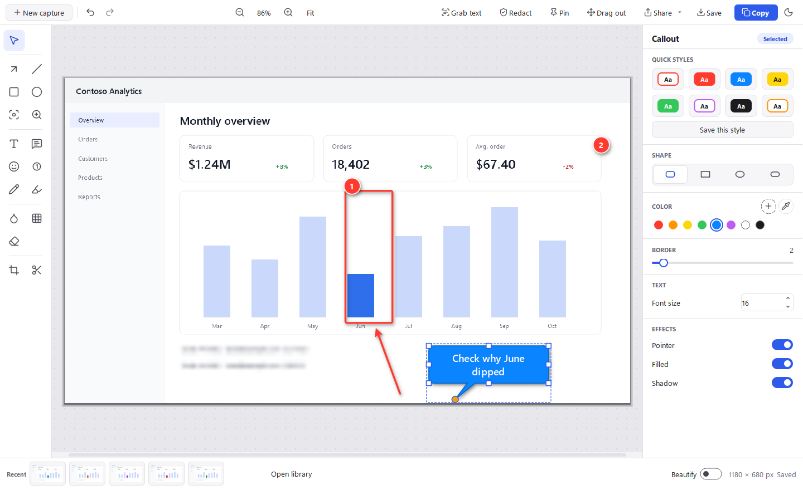

Snip, mark up and share in seconds.
A free, open-source screenshot tool for Windows. Press Win+Shift+S, drag over anything, and the snip opens in an editor with arrows, callouts, blur and more.
Download for WindowsLatest version · free · about 30 MB
Install in a minute
-
Open SnipForge-setup.exe from your Downloads
If your browser says the file isn't commonly downloaded, choose Keep (in Edge: … › Keep › Show more › Keep anyway).
-
If you see “Windows protected your PC”, click More info, then Run anyway
Windows protected your PC Microsoft Defender SmartScreen prevented an unrecognized app from starting. Running this app might put your PC at risk.
More infoThis warning appears because the installer isn't code-signed yet, so SmartScreen doesn't recognize it. It isn't a sign that anything is wrong with the file. After More info, check that the app is SnipForge-setup.exe, then choose Run anyway.
Want to double-check the download first? Every release lists SHA-256 checksums in SHA256SUMS.txt; compare with Get-FileHash SnipForge-setup.exe in PowerShell.
No “Run anyway” button? Your organization blocks apps that aren't recognized yet. Ask your IT team; they may offer SnipForge in Software Center or from a company file share.
-
Click through the installer
It installs just for you, with no admin rights, and adds Start menu and desktop shortcuts. Tick Start SnipForge when I sign in so Win+Shift+S always works.
-
Press Win+Shift+S or Print Screen to snip
To pin SnipForge to the taskbar, open Start, right-click SnipForge and choose Pin to taskbar.
Install once. It keeps itself up to date.
You only need this page the first time. After that, new versions come to you inside SnipForge.
Checks once a day
SnipForge looks for a new version once a day, and whenever you choose Check for updates in its tray menu. You can turn the daily check off there too.
Asks, then installs for you
When a new version is out, SnipForge asks first, then downloads and installs it. No admin rights, no trip back to this page, and your snips and settings stay put.
Verified before it installs
Every update is checked against the SHA-256 checksum published with its release. If it doesn't match, nothing is installed.
Works the way your company does
IT can turn update checks off by policy, deploy SnipForge for everyone, or mirror releases to a company file share. See the deployment options.
What it does
Snip anything
Click a window, drag a region or press Enter for the whole screen. A magnifier shows exact pixels, and the snip is copied to the clipboard.
Mark it up
Arrows, shapes, text, callouts, stamps, step numbers, highlighter, blur, smart erase, spotlight, magnify, crop and cut out. Rotate, resize, borders and torn edges, an eyedropper and quick styles of your own. Everything stays editable.
Share it
Start an Outlook email with the snip inline, open a Teams chat, get a OneDrive link, or drag it straight into an app.
Grab text
Copy the text out of any snip with offline OCR built into Windows.
Redact in one click
Finds email addresses and phone and card numbers in a snip and blurs them.
Private by design
No accounts, telemetry or analytics. Your snips stay on your PC. Free and open source under the MIT license.
System requirements
| Windows | Windows 10 or Windows 11, 64-bit |
|---|---|
| Permissions | No admin rights: installs to your user profile (%LOCALAPPDATA%\Programs\SnipForge) |
| Disk space | About 120 MB |
| Network | Only for update checks and the sharing you choose; snipping and editing work offline |
| Optional | Classic Outlook for email sharing, Microsoft Teams for chats, OneDrive for share links |